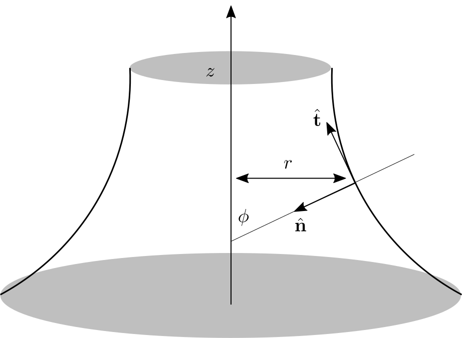

Navigation instructions
- Press at the bottom
left corner of the page to open a menu.
- Jump to any slide within this presentation to clicking its title.
- Press to navigate to another presentation.
- Press to "print" a *.pdf of the presentation.
- Press to open a written transcript of the audio in the slides.
- Press the
SPACEkey to progress forward in the presentation. - Use the
UP/DOWN/LEFT/RIGHTarrow keys or the arrows in the bottom right corner of the page to navigate the presentation.
CP535/970: Molecular and interfacial science
Mathematical description of interfaces
L Lue
Department of Chemical and Process Engineering
University of Strathclyde
Overview
- Curves in space
- Surfaces
- Generalization of the Young-Laplace equation
- Surface of revolution
- Capillary forces
- Summary
Shapes of interfaces
Curves in space

Curves in space
Curvature of surfaces

Curvature of surfaces
Surfaces
Young-Laplace equation

\begin{align*}
\Delta p &= \gamma\left(\frac{1}{R_1}+\frac{1}{R_2}\right)
\end{align*}
Soap films

Droplet shape

Surfaces of revolution

Surfaces of revolution
Overfilling a cup

Overfilling a cup

Surfaces of constant curvature
Capillary bridges

Force between two spheres

Colloidal capillary networks

Summary
- Curves in space
- Surfaces
- Generalization of the Young-Laplace equation
- Surfaces of revolution
- Capillary bridges
- Summary